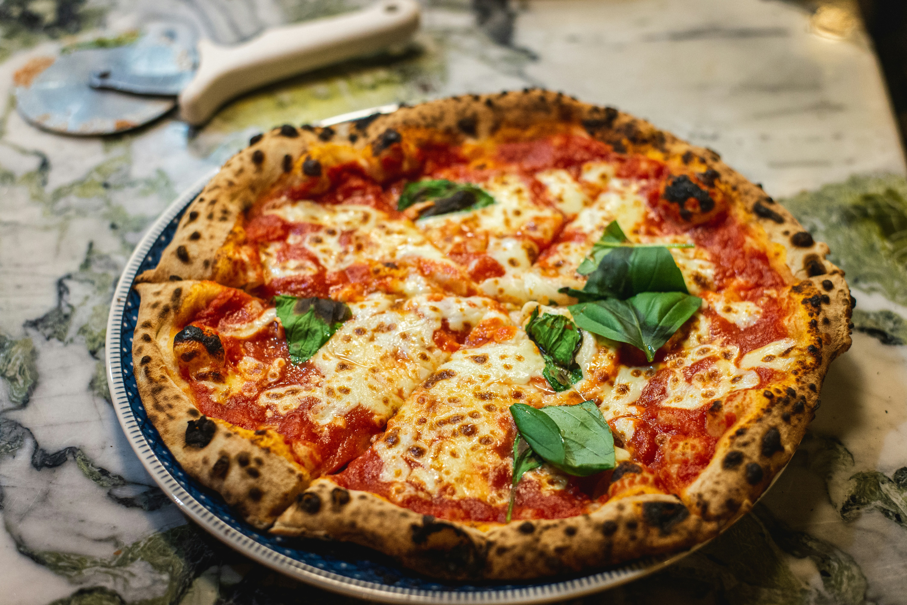

Traditional Italian Neapolitan pizza is a world-renowned culinary masterpiece, celebrated for its simplicity, quality ingredients, and distinct texture.
It features a hand-stretched dough baked to perfection in a very hot oven, resulting in a soft, airy crust with signature charred spots.
Topped with a vibrant tomato sauce, melting fresh mozzarella, and aromatic basil leaves, every slice offers an authentic taste of Italy
To create this classic pizza, you will need artisanal pizza dough, rich crushed tomato sauce (San Marzano style),
fresh mozzarella cheese cut into slices or chunks, and a drizzle of extra virgin olive oil.
Finish the dish with fresh green basil leaves placed generously on top after baking.
Start by stretching the fermented pizza dough by hand into a round disc on a floured surface, leaving the edges slightly thicker to form the crust.
Spread a thin layer of crushed tomato sauce evenly across the center, then distribute chunks of fresh mozzarella cheese.
Bake in a blazing hot oven or stone pizza oven until the crust is puffed and lightly charred, and the cheese is bubbling.
Remove from the oven, drizzle with olive oil, garnish immediately with fresh basil leaves, and slice using a pizza cutter.